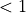

Quickstart
Installation
You can install timegpy using pip:
pip install git+https://github.com/hendersontrent/timegpy
Usage
timegpy (“genetic programming for time-average features”) is a Python package for finding informative time-average ‘features’ that can distinguish between classes. A time-series feature is a summary statistic which returns a scalar for each time series which summarises some property, such as the value of the autocorrelation function at lag 1, or the variance of sliding window variances taken across the time series (see this paper, this paper, and this book chapter for more).
Time-average features—quantities of the functional form such as  —have shown utility in solving time-series problems across the sciences but have yet to be systematically applied to time-series classification problems. Time-average features are highly interpretable, which means they can be used to develop an intuitive understanding of why two classes might be well distinguished from one another by their temporal dynamics.
—have shown utility in solving time-series problems across the sciences but have yet to be systematically applied to time-series classification problems. Time-average features are highly interpretable, which means they can be used to develop an intuitive understanding of why two classes might be well distinguished from one another by their temporal dynamics.
This tutorial will walk through basic functionality of the package using a simulated example. We will first generate some data, where we have samples from an autoregressive process of lag 1 with an autoregressive coefficient of  , and samples drawn from simple Gaussian noise (with mean 0 and standard deviation 1), where every time series is long:
, and samples drawn from simple Gaussian noise (with mean 0 and standard deviation 1), where every time series is long:
>>> import numpy as np
>>> from timegpy.gp import tsgp
>>> from timegpy.plots import plot_feature
>>> # Simulate Gaussian noise and AR(1) data
>>> def generate_ar1_vs_noise(N, T, phi, seed=None):
>>> if seed is not None:
>>> np.random.seed(seed)
>>> # AR(1) samples
>>> ar1_data = np.zeros((N, T))
>>> for i in range(N):
>>> noise = np.random.normal(0, 1, T)
>>> ar1 = np.zeros(T)
>>> ar1[0] = noise[0]
>>> for t in range(1, T):
>>> ar1[t] = phi * ar1[t - 1] + noise[t]
>>> ar1_data[i] = ar1
>>> # Gaussian noise samples
>>> noise_data = np.random.normal(0, 1, (N, T))
>>> # Combine
>>> X = np.vstack([ar1_data, noise_data])
>>> # Labels
>>> y = np.array([1] * N + [0] * N)
>>> return X, y
>>> X, y = generate_ar1_vs_noise(N=100, T=100, phi=0.8, seed=123)
Structure of time-average feature expressions in timegpy
In timegpy, features are represented as strings to the user, but trees internally. For example, a time-average feature representing lag 1 autocorrelation function (on z-scored data) which is mathematically written as would be represented in timegpy as "X_t+0 * X_t+1" or, more correctly, "mean(X_t+0 * X_t+1)". More complex features may include exponents, such as "X_t+0 + X_t+1 ^ 3" and/or numerous other combinations of time lags.
From a statistical perspective, for this tutorial example, we would expect to see the best performing feature to be "X_t+0 * X_t+1" as this corresponds to the value of the autocorrelation function at lag 1—which we know from the data simulation code above to be the distinguishing temporal difference between the two processes. This creates a nice ground truth test case for the algorithm.
Doing genetic programming in timegpy
The core function in timegpy is tsgp (‘time-series genetic programming’). We can exercise high degrees of control over the algorithm’s evolution by adjusting the large number of available arguments. Here is a simple call using all of the default parameters:
>>> X, y, df_all, df_best = tsgp(X, y)
tsgp returns four objects:
Input matrix
XClass label vector
yData frame containing all time-average features across all generations and their fitness scores
Data frame containing the best individual time-average feature and its fitness score
Despite the simplicity of the above call, it is highly likely that users will seek to adjust the numerous parameters to their task. Here is a breakdown of the available arguments:
X(array): ID by time matrix containing time-series datay(array): vector of class labels for each row ofXpop_size(int): size of each population. Defaults to100n_generations(int): maximum number of generations. Defaults to5fitness_threshold(float): objective function value which if equalled or exceeded, will terminate the algorithm. Defaults to0.95p_point_mutation(float): probability of point mutation occurring. Defaults to0.01p_subtree_mutation(float): probability of subtree mutation occurring. Defaults to0.01p_hoist_mutation(float): probability of hoist mutation occurring. Defaults to0.01p_crossover(float): probability of crossover occurring. Defaults to0.9p_exponent(float): probability of a time lag being exponentiated. Defaults to0.3tournament_size(int): size of each tournament to find a suitable parent. Defaults to20use_parsimony(bool): whether to use parsimony-adjusted fitness instead of raw fitness. Defaults toTrueauto_parsimony(bool): whether to calculate generational parsimony coefficients dynamically. Defaults toTrueparsimony_coefficient(float): ifauto_parsimony = False, this static coefficient for parsimony will be applied to all generations. Defaults to0.001verbose(bool): whether to print updates of algorithm progress. Defaults toFalsemax_depth(int): maximum number of time-lag terms allowed in a single feature expression. Defaults to8max_lag(int): maximum time-lag allowed in a single feature expression. Defaults to8max_exponent(int): maximum exponent allowed. Defaults to5seed(int): fixes Python’s random seed for reproducibility. Defaults to123n_generation_improve(int): number of generations of no fitness improvement before algorithm terminates early. Defaults to1z_score(bool): whether to z-score input data X. Defaults toTrue
Important parameter notes
fitness_threshold must be as the current objective function maximises values between  and
and  .
.
The values of p_point_mutation, p_subtree_mutation, p_hoist_mutation, and p_crossover must sum to  as the remaining probability is allocated to ‘no change’.
parsimony_coefficient, if used, must be otherwise it does not represent a complexity penalty.
Additional graphical tools
timegpy also contains functionality for interpreting a visualising genetic programming outputs. For example, users may seek to visualise class separation according to the best time-average feature (or any other). The convenience function feature_hist has been included for this purpose. It only requires a time-average feature expression as a string (using the conventions of timegpy), the input data X, and the class label vector y. Here is an example using the best found expression from the above example:
>>> expression = df_best.iloc[0]['expression']
>>> plot = plot_feature(expression, X, y)
>>> plot.show()

Intuitively, we see the Gaussian noise time series distributed around a feature value of and the AR(1) data (Class 1) distributed around —which we know to be the autoregressive coefficient we used to generate the data. This, combined with the fact that "X_t+0 * X_t+1" was found to be the best time-average feature for classifying the time series, solidifies that the algorithm is working as expected.
There are also plotting options for the Pareto front (pareto) as well as average fitness by generation (fitness_gen). The latter looks like this:
>>> plot_fitness_over_time(df_all, use_parsimony=True)
>>> plot.show()
{kind=link}
Evaluating individual time-average feature expressions
Outside of the core genetic programming algorithm contained in tsgp, timegpy can also calculate time-average feature values for any given string representation of an expression and the input matrix:
>>> feature_values = evaluate_expression("mean((X_t+0 * X_t+1))", X)
Multiclass problems
Since the current fitness metric is an (adjusted) from an ANOVA (which can have multiple groups), there are no additional requirements for multiclass problems. Let’s generate a three-class problem of Gaussian noise versus AR(1) process versus AR(2) process and run tsgp:
>>> def generate_noise_vs_ar1_vs_ar2(N, T, phi1=0.8, phi2=0.5, phi3=0.3, seed=None):
>>> if seed is not None:
>>> np.random.seed(seed)
>>> # AR(1) samples
>>> ar1_data = np.zeros((N, T))
>>> for i in range(N):
>>> noise = np.random.normal(0, 1, T)
>>> ar1 = np.zeros(T)
>>> ar1[0] = noise[0]
>>> for t in range(1, T):
>>> ar1[t] = phi1 * ar1[t - 1] + noise[t]
>>> ar1_data[i] = ar1
>>> # AR(2) samples
>>> ar2_data = np.zeros((N, T))
>>> for i in range(N):
>>> noise = np.random.normal(0, 1, T)
>>> ar2 = np.zeros(T)
>>> ar2[0] = noise[0]
>>> ar2[1] = noise[1]
>>> for t in range(2, T):
>>> ar2[t] = phi2 * ar2[t - 1] + phi3 * ar2[t - 2] + noise[t]
>>> ar2_data[i] = ar2
>>> # Gaussian noise samples
>>> noise_data = np.random.normal(0, 1, (N, T))
>>> # Combine and label
>>> X = np.vstack([noise_data, ar1_data, ar2_data])
>>> y = np.array([0] * N + [1] * N + [2] * N)
>>> return X, y
>>> X2, y2 = generate_noise_vs_ar1_vs_ar2(N=100, T=100, phi1=0.8, phi2=0.5, phi3=0.3, seed=123)
>>> X2, y2, df_all2, df_best2 = tsgp(
>>> X2, y2,
>>> pop_size=1000,
>>> fitness_threshold=0.99
>>> )
We can now easily visualise the best performing feature and how each class is distributed on it:
>>> expression2 = df_best2.iloc[0]['expression']
>>> plot2 = feature_hist2(expression2, X2, y2)
>>> plot2.show()